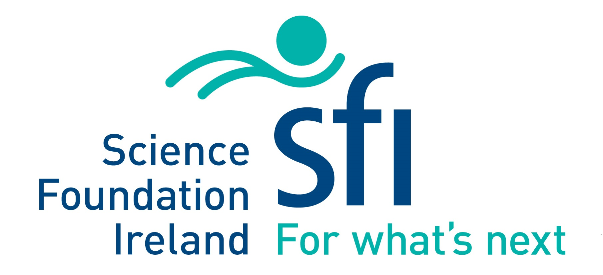
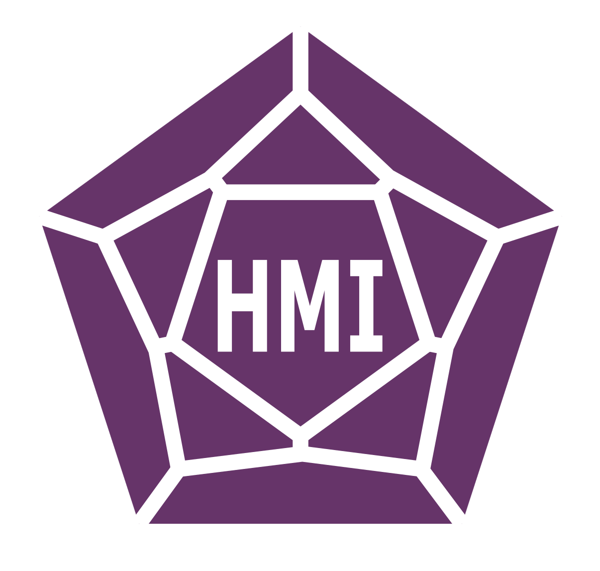
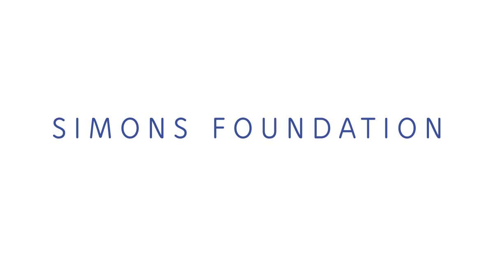
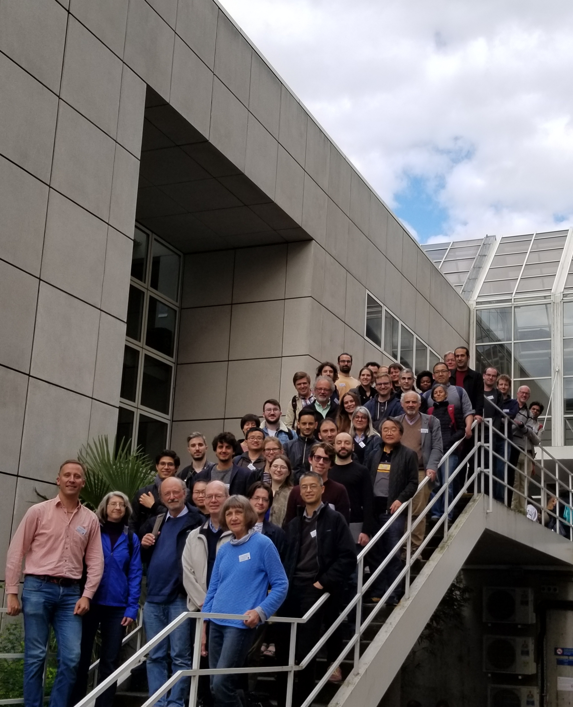

Description of the workshop:
Computing various homological invariants of associative algebras (such as Tor and Ext of various modules, Hochschild (co)homology, cyclic homology etc.) has been an active research topic in ring theory for many years. More recently (about 15 years ago), ring theorists became interested in associative algebras up to homotopy, or A∞-algebras, as a recipe to produce meaningful "higher structures" on classical objects like Yoneda Ext-algebras.
This offers two different perspectives on associative algebras: homological invariants are "Abelian" (i. e. arise when one works with additive categories, e.g. chain complexes of modules over a ring), while homotopical invariants are "non-Abelian" (i. e. arise from non-additive categories, like the category of all differential graded associative algebras). However, these two perspectives are closely related, and it is often possible to recover homological information from the homotopical one, and the other way round. For experts in homotopical algebra on a larger scale (beyond the associative ring theory), this philosophy is already present in works of Stasheff and Hinich on homotopy algebras.
The goal of this workshop is to provide a forum for experts in related areas to share ideas with each other and with younger researchers, identify new promising connections and explore arising research directions.
Host institution
The workshop will be hosted by Hamilton Mathematics Institute, Trinity College Dublin.
Speakers to include:
Joseph Chuang (City University)Karin Erdmann (Oxford)
Estanislao Herscovich (Grenoble)
Dmitri Kaledin (Steklov Institute / NRU HSE)
Bernhard Keller (Paris 7), mini-course
Steffen Koenig (Stuttgart)
Julian Külshammer (Uppsala)
Wendy Lowen (Antwerp)
Maria Julia Redondo (Universidad del Sur)
Sibylle Schroll (Leicester)
Jim Stasheff* (U Penn)
Chelsea Walton (Urbana-Champaign)
Sarah Witherspoon (Texas A&M), mini-course
* video lecture
Organisers:
Vladimir Dotsenko (HMI/TCD)Vincent Gélinas (HMI/TCD)
Andrea Solotar (Buenos Aires)
Sponsors:
We gratefully acknowledge support of Science Foundation Ireland, Hamilton Mathematics Institute and the Simons Foundation.|
 |
 |
 |
Registration and financial support:
Registration is now closed. If you are interested in attending but have not registered, please contact Vladimir Dotsenko (vdots@maths.tcd.ie) at your earliest convenience.
Applications for financial support are now closed. All applicants who sent us their CV and list of publication alongside with an application for funding have been contacted with funding decisions.
List of participants:
|
 |